CS 180 Project 4: Image Warping and Mosaicing
Part A: Image Warping and Mosaicing
A.1 Shooting the Pictures
Three pairs shot in Cupertino with the iPhone 17 Pro’s 1× camera. For each pair I kept the phone in place and only rotated it (about 17–19°), so the two photos share a center of projection and are related by a homography. The photos overlap by 64–69%.
Set 1: Visitor Center sign

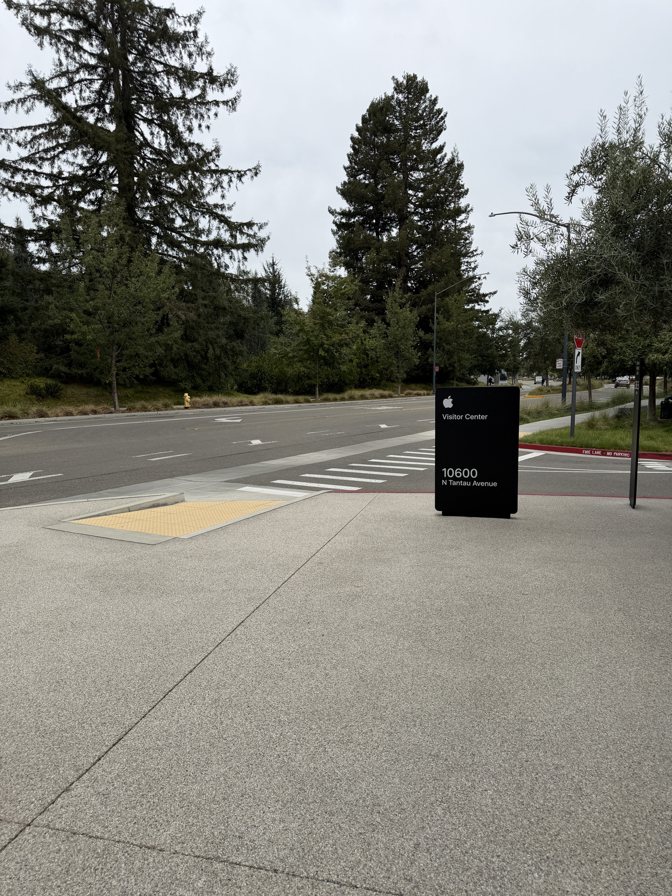

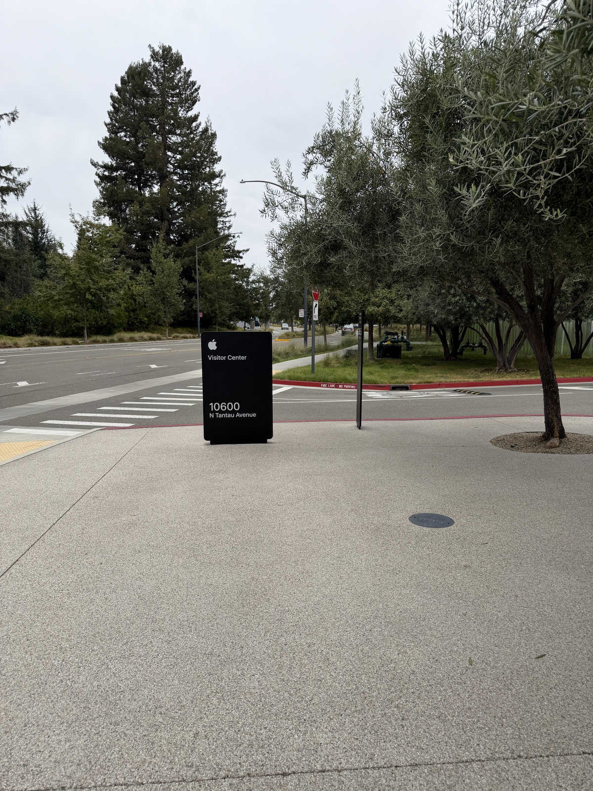
Set 2: Olive tree path

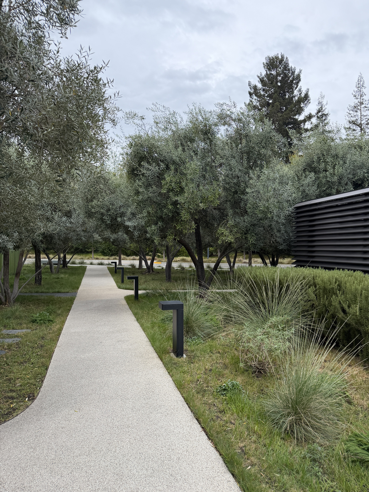

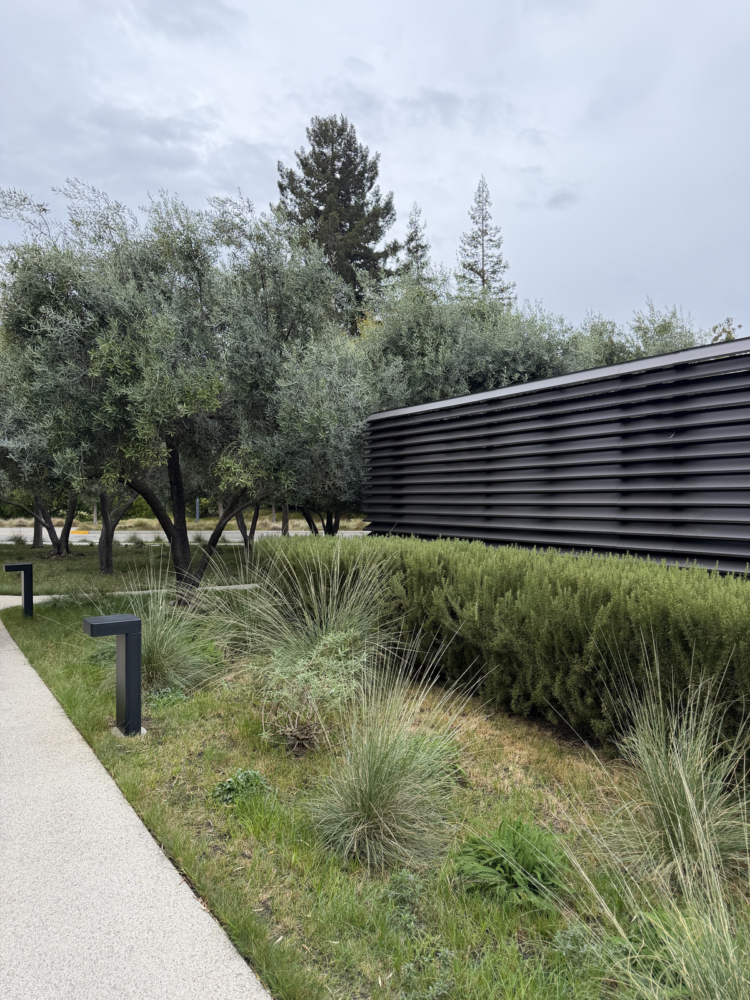
Set 3: Apartment walkway


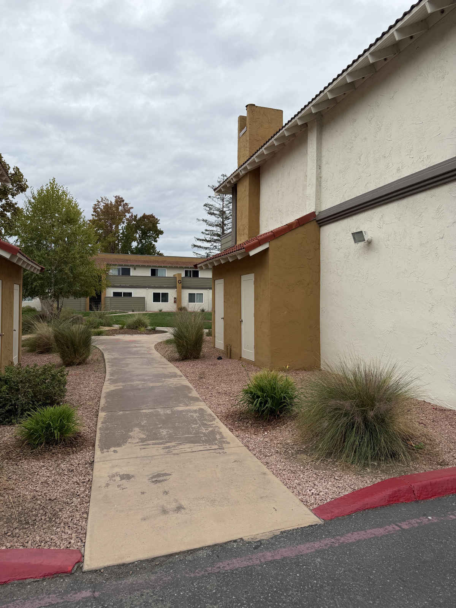
A.2 Recovering Homographies
A homography maps \((x, y)\) to \((x', y')\) up to scale:
\[ \begin{bmatrix} w x' \\ w y' \\ w \end{bmatrix} = \begin{bmatrix} a & b & c \\ d & e & f \\ g & h & 1 \end{bmatrix} \begin{bmatrix} x \\ y \\ 1 \end{bmatrix}. \]
Dividing out \(w\) and clearing the denominator gives two linear equations per correspondence:
\[ \begin{bmatrix} x & y & 1 & 0 & 0 & 0 & -x x' & -y x' \\ 0 & 0 & 0 & x & y & 1 & -x y' & -y y' \end{bmatrix} \mathbf h = \begin{bmatrix} x' \\ y' \end{bmatrix}, \qquad \mathbf h = (a, b, c, d, e, f, g, h)^\top. \]
Stacking \(n\) correspondences gives a \(2n \times 8\) system \(A\mathbf h = \mathbf b\), which I solve with least squares. I clicked 15 correspondences per pair, spread across the overlap.

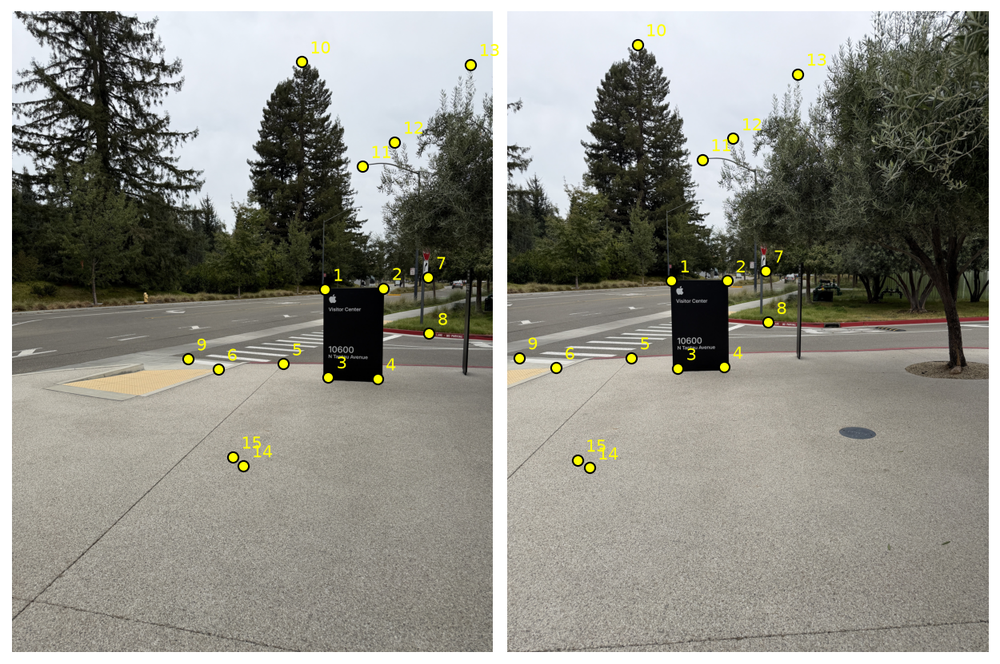

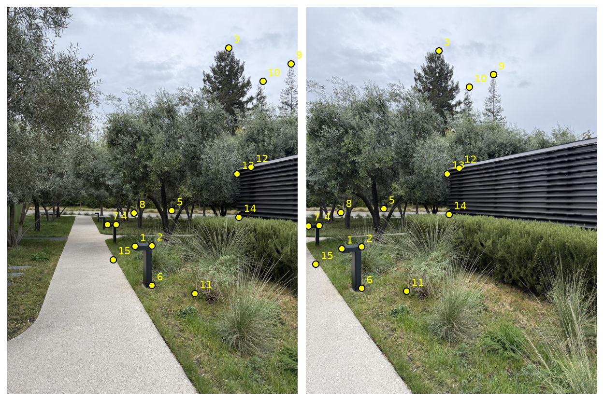

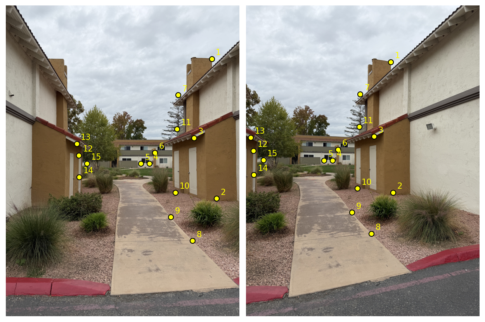
Full systems for Sets 1 and 2 (15 correspondences each, so \(30 \times 8\); rows \(2k-1\) and \(2k\) come from correspondence \(k\)).
Set 1:
\[ \small \begin{bmatrix} 779.17 & 693.52 & 1 & 0 & 0 & 0 & -317987.07 & -283032.45 \\ 0 & 0 & 0 & 779.17 & 693.52 & 1 & -523633.41 & -466073.18 \\ 926.29 & 690.92 & 1 & 0 & 0 & 0 & -507671.76 & -378672.52 \\ 0 & 0 & 0 & 926.29 & 690.92 & 1 & -622503.93 & -464325.88 \\ 788.28 & 912.25 & 1 & 0 & 0 & 0 & -334538.15 & -387149.78 \\ 0 & 0 & 0 & 788.28 & 912.25 & 1 & -702688.56 & -813197.90 \\ 910.67 & 916.81 & 1 & 0 & 0 & 0 & -491998.57 & -495315.77 \\ 0 & 0 & 0 & 910.67 & 916.81 & 1 & -808228.73 & -813678.04 \\ 676.97 & 879.70 & 1 & 0 & 0 & 0 & -208852.01 & -271396.25 \\ 0 & 0 & 0 & 676.97 & 879.70 & 1 & -585396.27 & -760702.98 \\ 514.87 & 892.72 & 1 & 0 & 0 & 0 & -62314.72 & -108045.90 \\ 0 & 0 & 0 & 514.87 & 892.72 & 1 & -457961.42 & -794047.66 \\ 1036.31 & 663.58 & 1 & 0 & 0 & 0 & -665787.72 & -426323.61 \\ 0 & 0 & 0 & 1036.31 & 663.58 & 1 & -670803.46 & -429535.33 \\ 1040.21 & 803.54 & 1 & 0 & 0 & 0 & -675751.62 & -522003.69 \\ 0 & 0 & 0 & 1040.21 & 803.54 & 1 & -807400.60 & -623699.71 \\ 438.71 & 867.33 & 1 & 0 & 0 & 0 & -12542.72 & -24796.96 \\ 0 & 0 & 0 & 438.71 & 867.33 & 1 & -379365.70 & -750006.27 \\ 721.88 & 125.22 & 1 & 0 & 0 & 0 & -233520.96 & -40507.42 \\ 0 & 0 & 0 & 721.88 & 125.22 & 1 & -59374.63 & -10299.34 \\ 873.56 & 386.26 & 1 & 0 & 0 & 0 & -424183.26 & -187560.13 \\ 0 & 0 & 0 & 873.56 & 386.26 & 1 & -322631.91 & -142657.41 \\ 954.28 & 325.72 & 1 & 0 & 0 & 0 & -536677.53 & -183181.67 \\ 0 & 0 & 0 & 954.28 & 325.72 & 1 & -302754.87 & -103337.93 \\ 1143.72 & 131.73 & 1 & 0 & 0 & 0 & -827870.28 & -95351.44 \\ 0 & 0 & 0 & 1143.72 & 131.73 & 1 & -178203.01 & -20524.85 \\ 577.17 & 1133.84 & 1 & 0 & 0 & 0 & -117575.30 & -230974.55 \\ 0 & 0 & 0 & 577.17 & 1133.84 & 1 & -657650.58 & -1291942.65 \\ 550.45 & 1112.23 & 1 & 0 & 0 & 0 & -95646.19 & -193261.08 \\ 0 & 0 & 0 & 550.45 & 1112.23 & 1 & -616454.46 & -1245597.50 \end{bmatrix} \mathbf h = \begin{bmatrix} 408.11 \\ 672.04 \\ 548.07 \\ 672.04 \\ 424.39 \\ 891.42 \\ 540.26 \\ 887.51 \\ 308.51 \\ 864.73 \\ 121.03 \\ 889.47 \\ 642.46 \\ 647.30 \\ 649.63 \\ 776.19 \\ 28.59 \\ 864.73 \\ 323.49 \\ 82.25 \\ 485.58 \\ 369.33 \\ 562.39 \\ 317.26 \\ 723.84 \\ 155.81 \\ 203.71 \\ 1139.44 \\ 173.76 \\ 1119.91 \end{bmatrix}. \]
Set 2:
\[ \small \begin{bmatrix} 526.59 & 989.72 & 1 & 0 & 0 & 0 & -76076.46 & -142984.85 \\ 0 & 0 & 0 & 526.59 & 989.72 & 1 & -525973.89 & -988562.03 \\ 595.59 & 986.46 & 1 & 0 & 0 & 0 & -134508.05 & -222782.13 \\ 0 & 0 & 0 & 595.59 & 986.46 & 1 & -590628.74 & -978242.79 \\ 913.27 & 168.83 & 1 & 0 & 0 & 0 & -498161.39 & -92091.70 \\ 0 & 0 & 0 & 913.27 & 168.83 & 1 & -164890.90 & -30482.26 \\ 448.47 & 898.58 & 1 & 0 & 0 & 0 & -23042.39 & -46169.04 \\ 0 & 0 & 0 & 448.47 & 898.58 & 1 & -404735.21 & -810950.48 \\ 678.27 & 841.29 & 1 & 0 & 0 & 0 & -215438.90 & -267218.94 \\ 0 & 0 & 0 & 678.27 & 841.29 & 1 & -565765.36 & -701745.23 \\ 596.25 & 1150.51 & 1 & 0 & 0 & 0 & -134657.10 & -259831.18 \\ 0 & 0 & 0 & 596.25 & 1150.51 & 1 & -693367.20 & -1337905.07 \\ 413.32 & 899.88 & 1 & 0 & 0 & 0 & -3207.36 & -6983.07 \\ 0 & 0 & 0 & 413.32 & 899.88 & 1 & -373823.14 & -813887.47 \\ 523.34 & 851.71 & 1 & 0 & 0 & 0 & -73560.67 & -119716.36 \\ 0 & 0 & 0 & 523.34 & 851.71 & 1 & -444027.82 & -722633.35 \\ 1171.06 & 233.93 & 1 & 0 & 0 & 0 & -903308.84 & -180444.24 \\ 0 & 0 & 0 & 1171.06 & 233.93 & 1 & -326550.08 & -65231.38 \\ 1054.53 & 306.19 & 1 & 0 & 0 & 0 & -708391.07 & -205686.19 \\ 0 & 0 & 0 & 1054.53 & 306.19 & 1 & -348975.61 & -101327.46 \\ 773.31 & 1183.71 & 1 & 0 & 0 & 0 & -318619.19 & -487712.19 \\ 0 & 0 & 0 & 773.31 & 1183.71 & 1 & -908824.84 & -1391143.34 \\ 1005.06 & 662.27 & 1 & 0 & 0 & 0 & -632624.97 & -416859.23 \\ 0 & 0 & 0 & 1005.06 & 662.27 & 1 & -668244.29 & -440330.08 \\ 947.12 & 690.27 & 1 & 0 & 0 & 0 & -549301.19 & -400335.89 \\ 0 & 0 & 0 & 947.12 & 690.27 & 1 & -652527.80 & -475568.42 \\ 955.59 & 868.63 & 1 & 0 & 0 & 0 & -561676.69 & -510563.34 \\ 0 & 0 & 0 & 955.59 & 868.63 & 1 & -818864.18 & -744346.42 \\ 436.10 & 1043.75 & 1 & 0 & 0 & 0 & -16445.33 & -39359.81 \\ 0 & 0 & 0 & 436.10 & 1043.75 & 1 & -463696.41 & -1109798.50 \end{bmatrix} \mathbf h = \begin{bmatrix} 144.47 \\ 998.83 \\ 225.84 \\ 991.67 \\ 545.47 \\ 180.55 \\ 51.38 \\ 902.48 \\ 317.63 \\ 834.13 \\ 225.84 \\ 1162.88 \\ 7.76 \\ 904.44 \\ 140.56 \\ 848.45 \\ 771.36 \\ 278.85 \\ 671.76 \\ 330.93 \\ 412.02 \\ 1175.24 \\ 629.44 \\ 664.88 \\ 579.97 \\ 688.96 \\ 587.78 \\ 856.92 \\ 37.71 \\ 1063.28 \end{bmatrix}. \]
Recovered homographies (left photo → right photo):
\[ H_1 = \begin{bmatrix} 1.5195 & 0.0606 & -683.89 \\ 0.2781 & 1.3733 & -267.93 \\ 4.060 \times 10^{-4} & 3.359 \times 10^{-5} & 1 \end{bmatrix}, \]
\[ H_2 = \begin{bmatrix} 1.4675 & 0.0114 & -607.27 \\ 0.2970 & 1.3179 & -251.65 \\ 3.770 \times 10^{-4} & 1.331 \times 10^{-5} & 1 \end{bmatrix}, \]
\[ H_3 = \begin{bmatrix} 1.4589 & 0.0014 & -504.99 \\ 0.2993 & 1.3310 & -271.69 \\ 3.682 \times 10^{-4} & 2.845 \times 10^{-5} & 1 \end{bmatrix}. \]
A.3 Warping the Images
Inverse warping: I send the image corners through \(H\) to get the output bounding box, then map every output pixel back through \(H^{-1}\) and sample the source. Pixels that map outside the source get alpha 0.
- Nearest neighbor: round to the closest pixel.
- Bilinear: with \(x_0 = \lfloor x \rfloor\), \(\alpha = x - x_0\) (and \(y_0\), \(\beta\) likewise),
\[ I(x, y) = (1-\alpha)(1-\beta)\, I_{x_0, y_0} + \alpha(1-\beta)\, I_{x_0+1, y_0} + (1-\alpha)\beta\, I_{x_0, y_0+1} + \alpha\beta\, I_{x_0+1, y_0+1}. \]
Rectification
I click the four corners of a rectangular object and map them to a rectangle with its aspect ratio: 22 × 28 in for the poster frame, 8.5 × 11 in for the flyer, and about 1.6 : 1 (estimated) for the menu board.
Rectification 1: poster frame


Rectification 2: flyer


Rectification 3: menu board


Nearest Neighbor vs. Bilinear
| Image | Output size | Nearest neighbor | Bilinear |
|---|---|---|---|
| Poster frame | 1543 × 2084 | 0.36 s | 0.49 s |
| Flyer | 2580 × 3386 | 0.79 s | 1.20 s |
| Menu board | 1856 × 2284 | 0.38 s | 0.81 s |
Bilinear is about 1.4–2× slower, since it reads four pixels instead of one. Zoomed in, nearest neighbor gives jagged, blocky letter edges where the photo is enlarged, while bilinear stays smooth and only slightly softer. The quality is worth the cost, so I use bilinear for the mosaics.

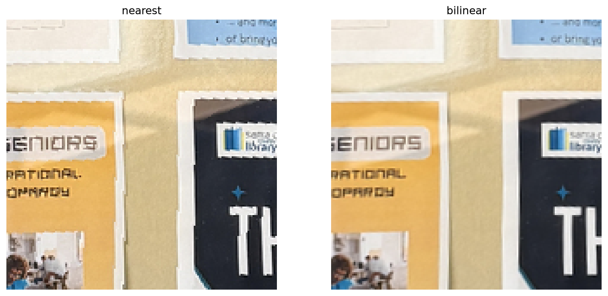

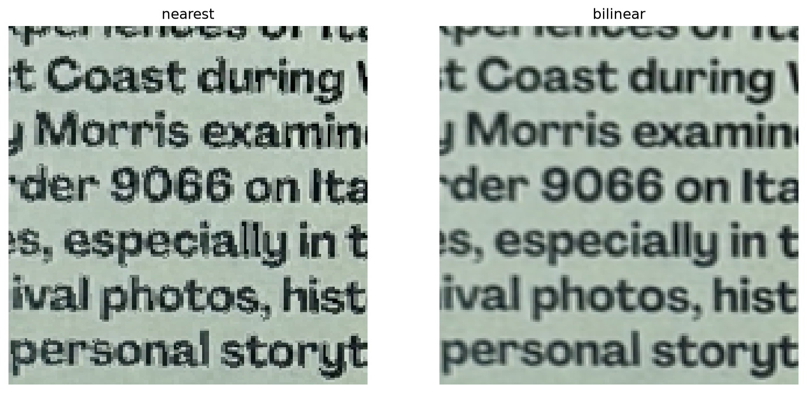

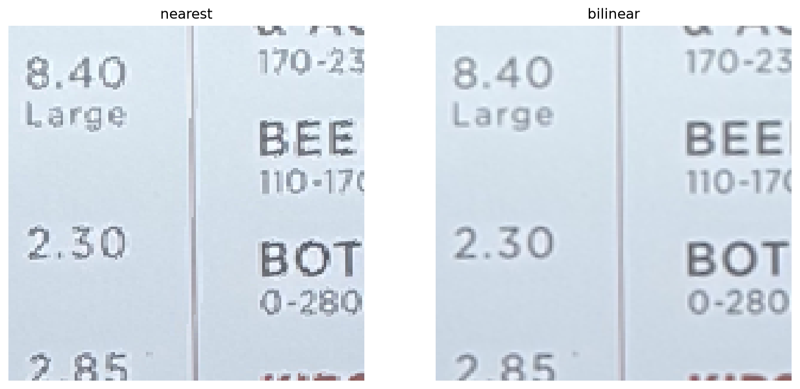
A.4 Blending into a Mosaic
- Keep the right photo fixed and warp the left photo into its frame, on a canvas that fits both.
- Give each image a weight that is 1 at its center and falls to 0 at its edges (a distance transform), warped along with the image.
- Blend in two bands so that small misalignments don’t show up as doubled edges:
- Low band (Gaussian blur, \(\sigma = 8\)): weighted average, so brightness changes fade across the overlap.
- High band (image minus blur): taken from whichever image has the larger weight at each pixel.
- Add the two bands to get the mosaic.
Set 1: Visitor Center sign

Set 2: Olive tree path

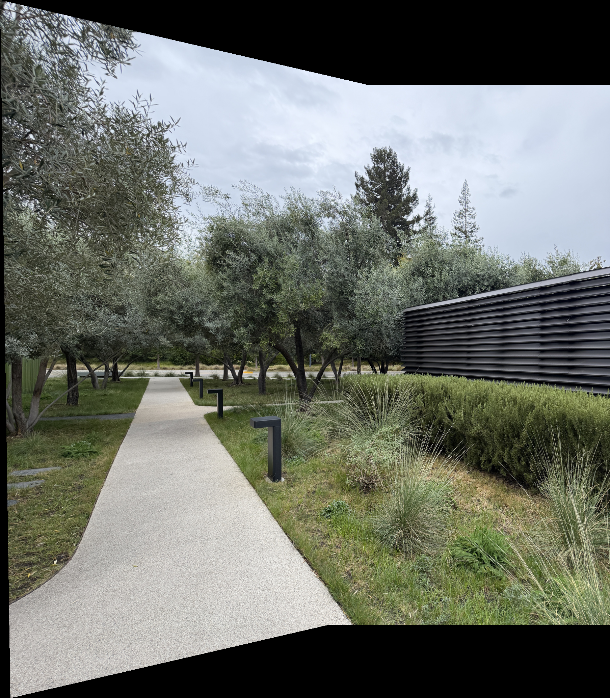
Set 3: Apartment walkway

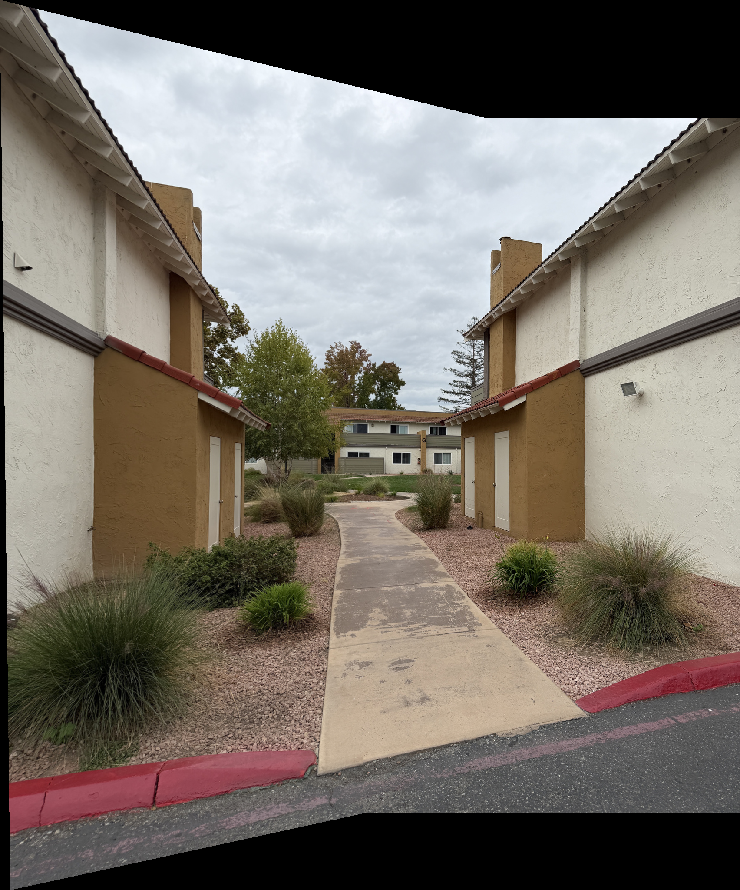
Part B: Feature Matching for Autostitching
Part B finds the correspondences automatically, following the MOPS paper (Brown et al.) at a single scale and without rotation. It uses the same three pairs as Part A.
B.1 Harris Corners and ANMS
I run the course’s harris.py on the grayscale image and drop corners with strength below 0.01, which are noise in flat sky. ANMS gives each corner a suppression radius, the distance to the nearest clearly stronger corner,
\[ r_i = \min_j \lVert \mathbf x_i - \mathbf x_j \rVert \ \ \text{s.t.}\ \ f(\mathbf x_i) < 0.9\, f(\mathbf x_j), \]
and keeps the 500 corners with the largest \(r_i\). The 500 strongest corners pile into the tree canopies; ANMS spreads them over the whole photo.

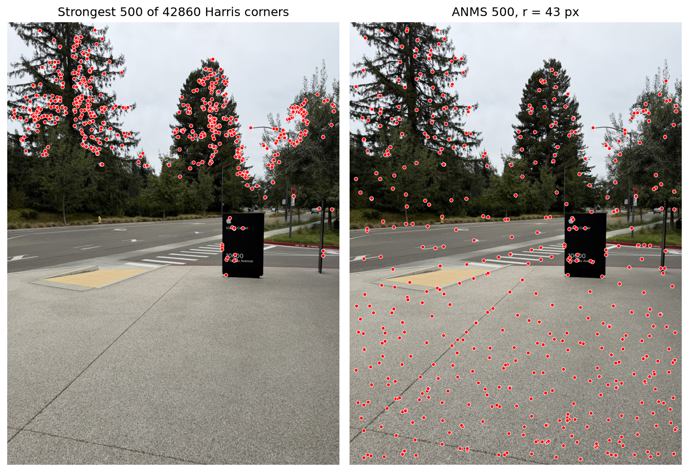

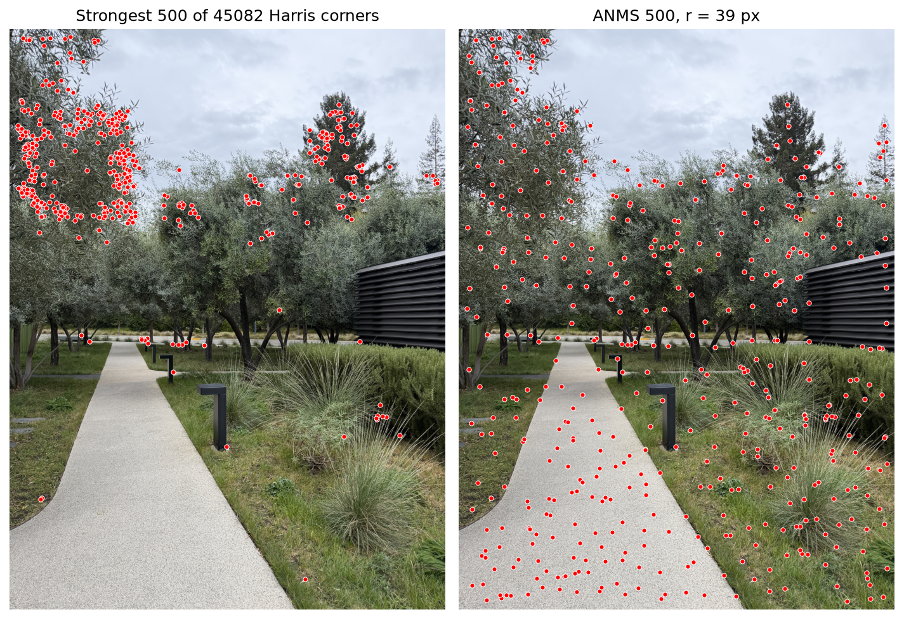

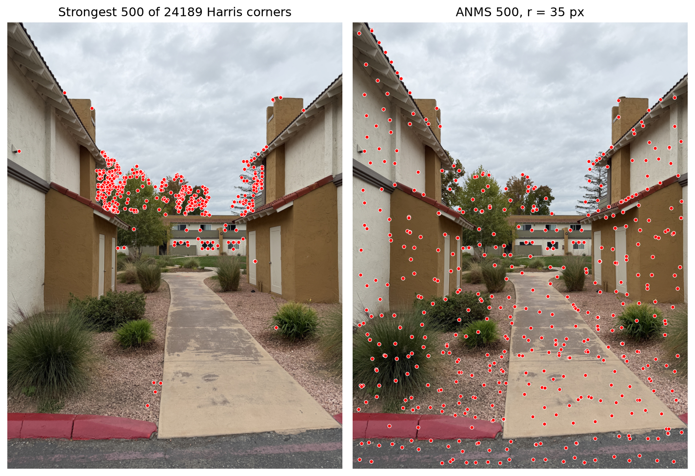
B.2 Feature Descriptors
Each descriptor is an axis-aligned 8×8 grid sampled every 5 px from a 40×40 window of the blurred (\(\sigma = 2.5\)) grayscale image, then normalized to mean 0 and standard deviation 1.

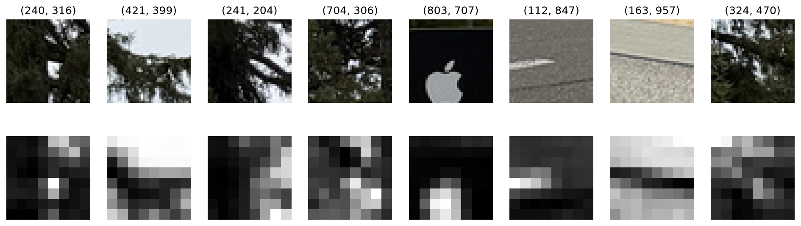
B.3 Feature Matching
Each left-photo descriptor is matched to its nearest reference descriptor if the ratio of squared distances to the first and second nearest neighbors is below 0.5 (Lowe’s test; the paper’s Figure 6b shows wrong matches dominating above about 0.5). This gives 144, 166 and 236 matches. The few crossing lines are outliers that RANSAC removes.

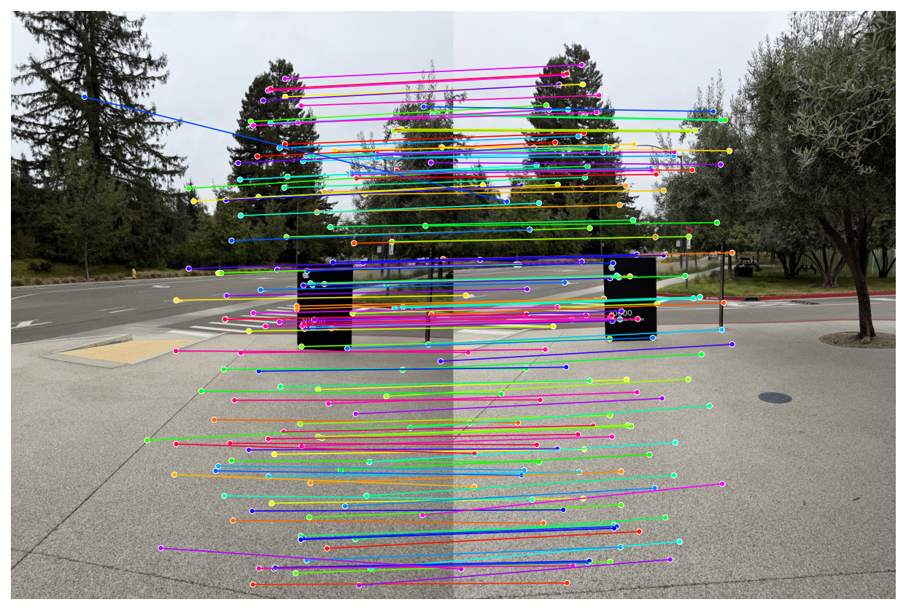

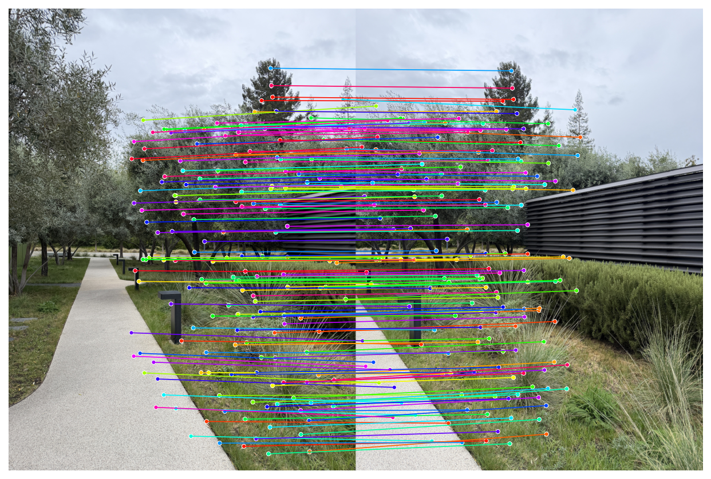

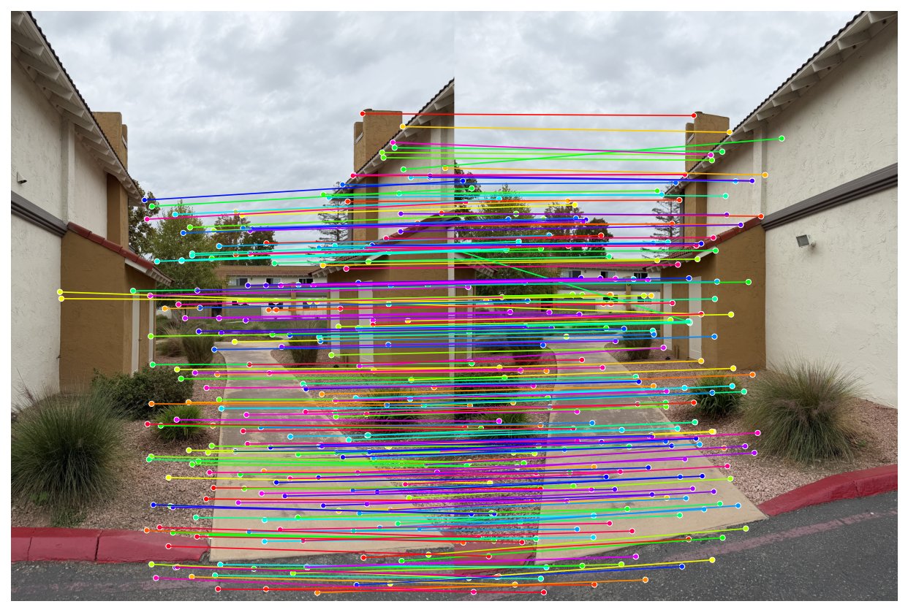
B.4 RANSAC and Automatic Mosaics
Each of 2000 iterations fits an exact homography to 4 random matches and counts the matches it maps within 3 px. The final \(H\) is the least-squares fit to the largest inlier set (111, 132 and 160 inliers). The mosaics use the A.4 warp and blend.
The automatic mosaics match the manual ones, with no ghosting along the overlap.
Set 1

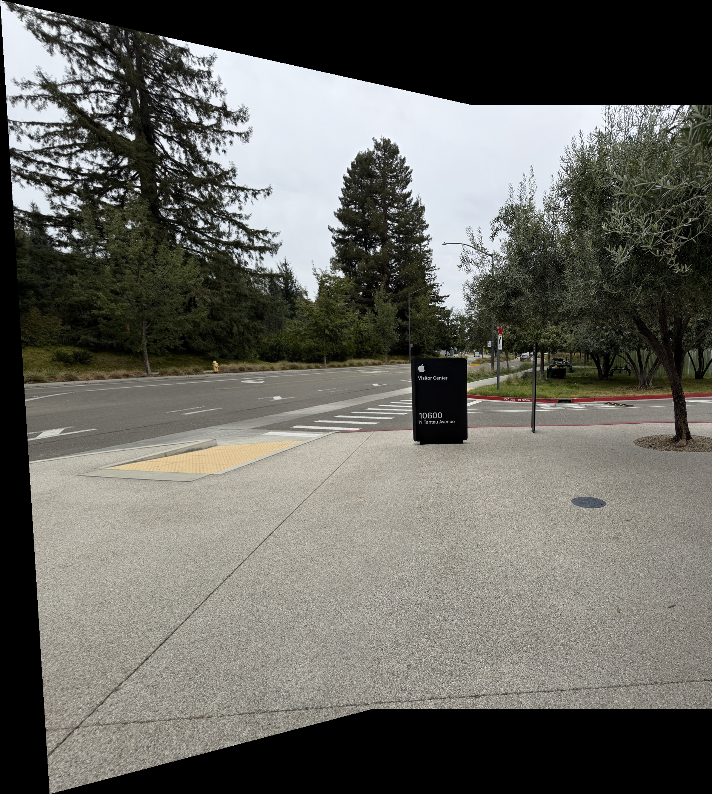
Set 2

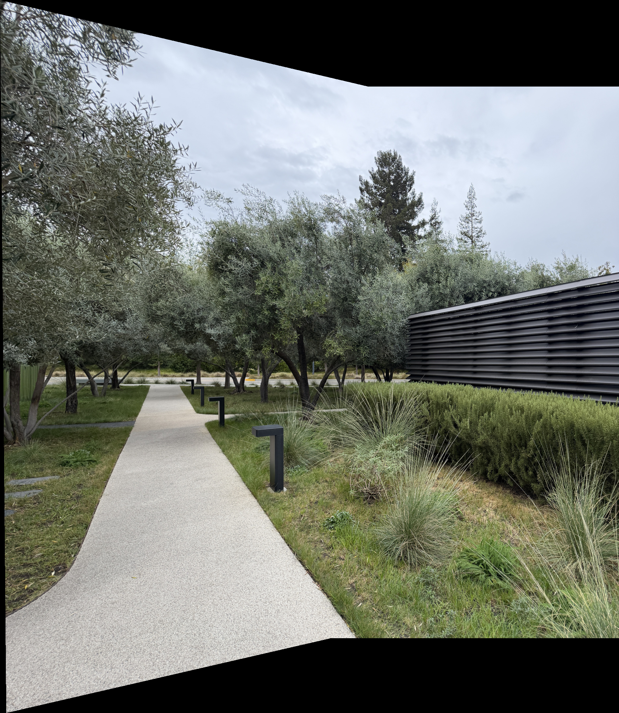
Set 3

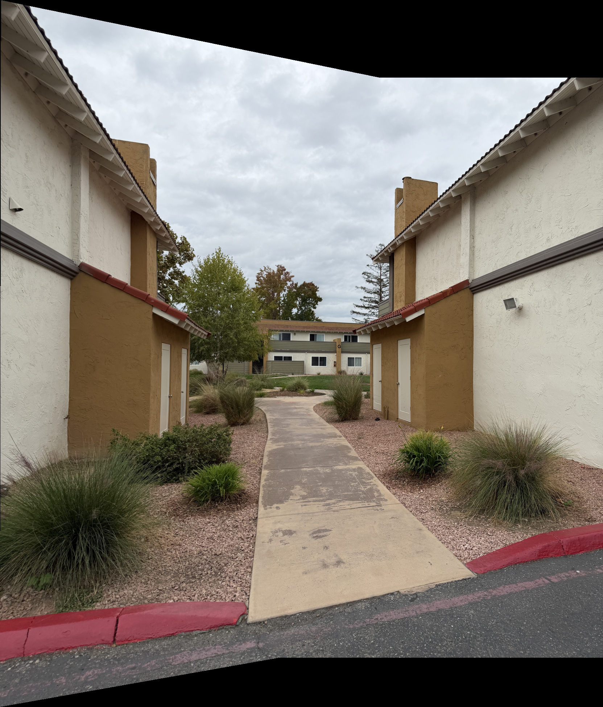